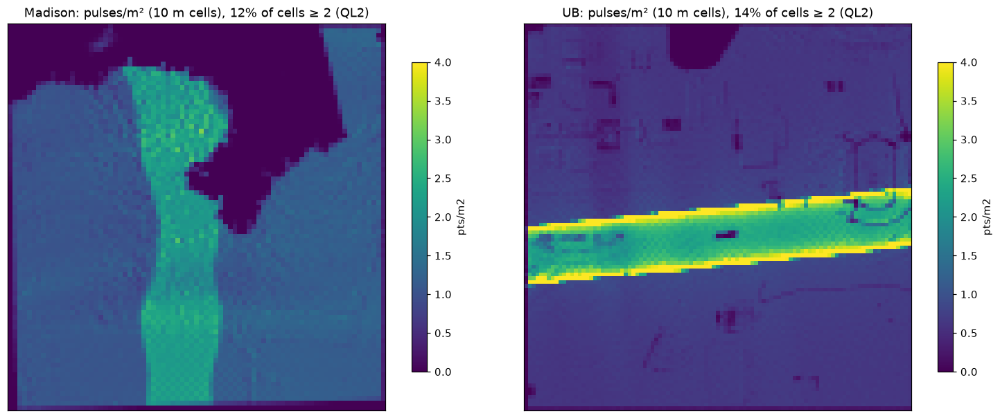
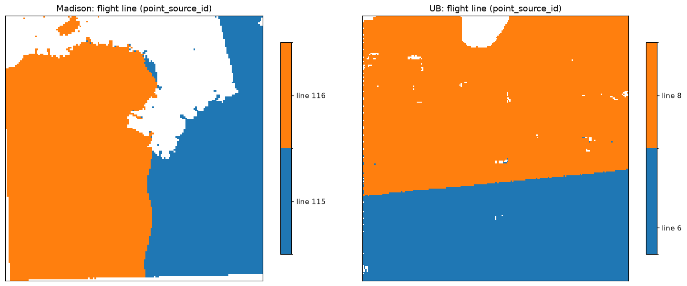
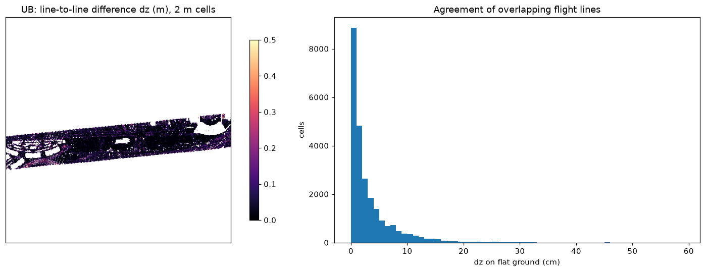
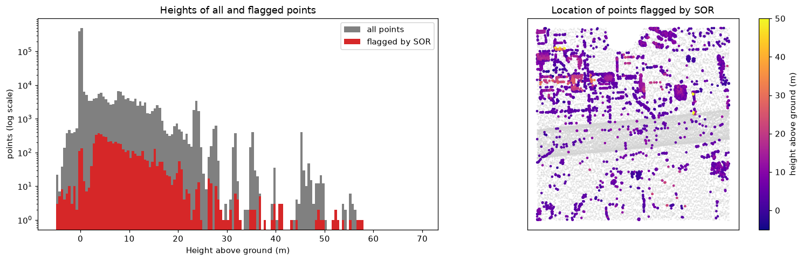
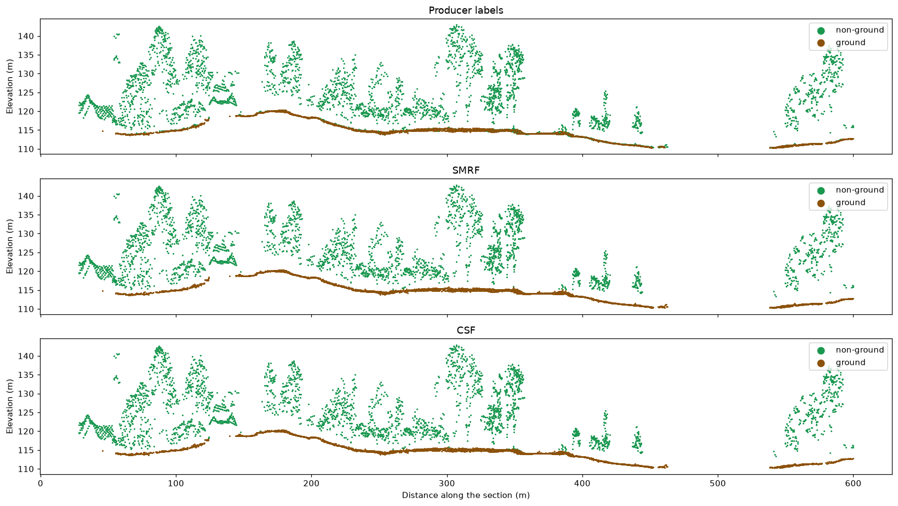
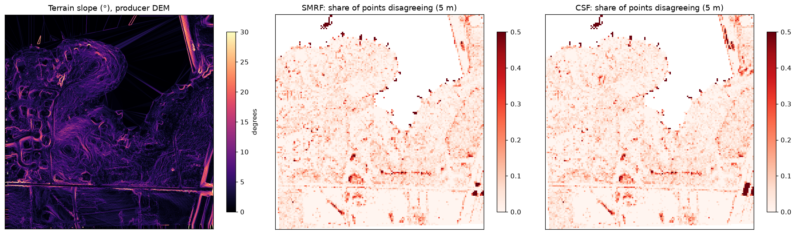
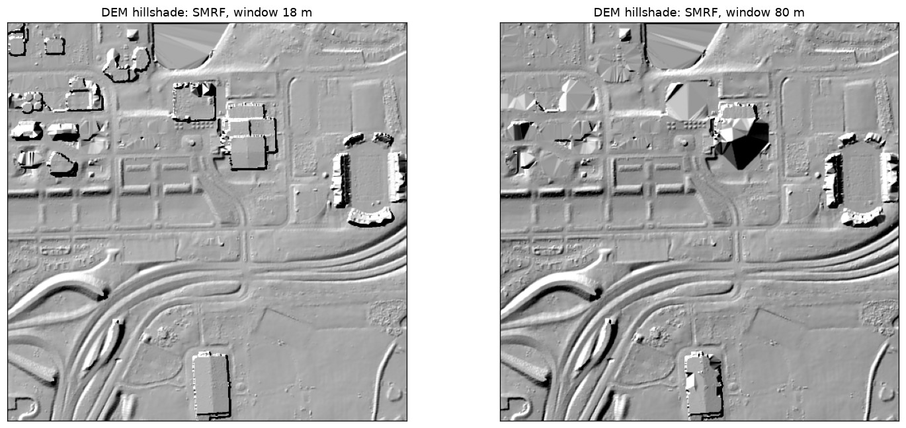
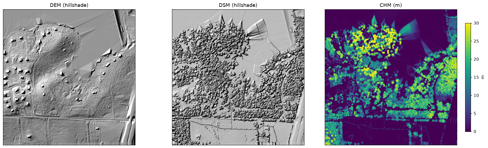
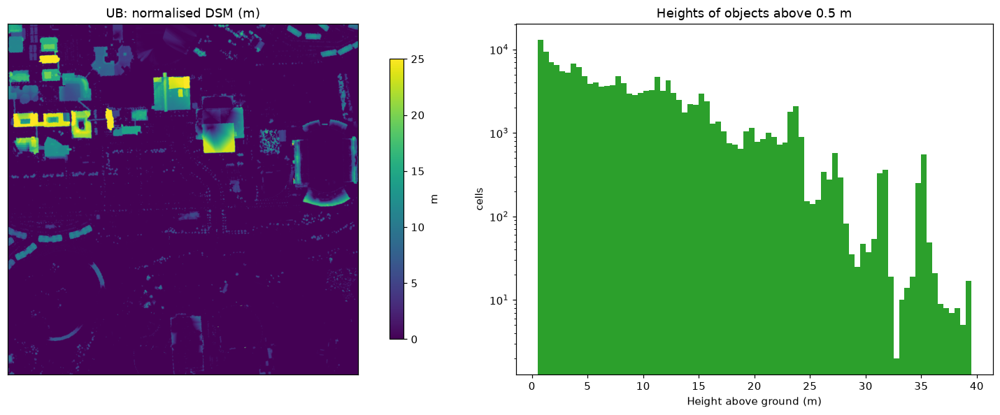
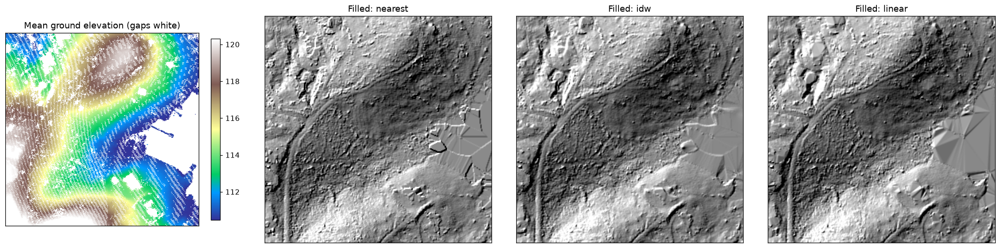

LiDAR Processing: Quality Control, Cleaning, Ground Classification and Surface Models
A delivered point cloud is raw material. Before it can give terrain, canopy or building products it has to be checked for coverage and consistency, cleaned of noise, reduced to the points that matter, and split into ground and non-ground points. This notebook walks through those steps with geolattice.rsense.lidar on a forested site in Mississippi and on the University at Buffalo campus, validates three ground filters against the producers’ labels, and builds the three standard surfaces: the digital elevation model (DEM), the digital surface model (DSM) and the canopy height model (CHM).
Overview
Every LiDAR product depends on a chain of processing steps, and errors early in the chain propagate into everything that follows:
Step
Question it answers
Typical tools
Quality control
Is the coverage complete and dense enough? Do overlapping flight lines agree? Are the units and classes what the metadata say?
Density maps, swath-overlap differences, class and return tables
Noise removal
Which points are birds, multipath echoes or sensor artefacts?
Statistical and radius outlier filters, elevation bands
Selection and thinning
Which points are needed for this product, and how many?
Class, return and polygon filters; voxel or grid thinning
What are the terrain, the top surface and the height of objects above the terrain?
Gridding with min/max/mean statistics, gap filling, DSM minus DEM
Accuracy assessment
How close is the DEM to surveyed ground truth?
Checkpoints, RMSEz, NVA and VVA (ASPRS 2014)
Quality control
Point density. Specifications such as the USGS 3DEP Lidar Base Specification set a minimum aggregate nominal pulse density (for example 2 pulses/m² for quality level QL2) and require that most of the area meets it. A density grid of first returns (one per pulse) shows gaps caused by water, dark roofs, missed flight lines or steep scan angles.
Swath overlap. Neighbouring flight lines overlap, so the same ground is measured twice from different positions. On hard, flat surfaces both lines should agree to a few centimetres. Systematic differences reveal errors in the trajectory or the boresight calibration (strip misalignment). Each point’s point_source_id records the flight line it came from.
Classes and returns. A table of class codes and of returns per pulse is a quick check that the data match the metadata: a vegetated area with almost no multiple returns, or a missing ground class, signals a problem.
Noise
Noise points are far above or below the true surface: birds, low clouds, multipath echoes from water or glass, and range errors near strong reflectors. Two classic filters, both from the Point Cloud Library (PCL):
Statistical outlier removal (SOR). For every point compute the mean distance \(\bar d_i\) to its \(k\) nearest neighbours. Points with \(\bar d_i > \mu + \alpha\,\sigma\) (mean and standard deviation over all points) are outliers.
Radius outlier removal. A point with fewer than \(m\) neighbours within radius \(r\) is isolated and removed.
Outliers can be dropped or reclassified as low noise (class 7) or high noise (class 18) so they stay in the file but are ignored downstream.
Ground classification
Separating ground from non-ground points is the hinge on which every terrain and height product turns. The main families of filters:
Morphological filters. Grid the lowest point per cell and apply a morphological opening (erosion followed by dilation) with a growing window. An opening removes objects narrower than the window, so the opened surface approximates the terrain; cells that rise above it by more than a slope-dependent threshold are objects. The Progressive Morphological Filter (PMF, Zhang et al. 2003) grows the window and the height threshold together. The Simple Morphological Filter (SMRF, Pingel et al. 2013) uses disk-shaped windows up to a maximum radius and a threshold of slope × radius, then interpolates a provisional terrain and labels points within a small tolerance of it as ground. The window must exceed the largest object (the widest roof); the slope must allow for the steepest terrain.
Cloth Simulation Filter (CSF, Zhang et al. 2016). Turn the point cloud upside down and drop a cloth of connected particles onto it under gravity. Stiff springs (high rigidness) keep the cloth flat, so it rests on the lowest points and bridges over buildings and trees (now pointing downwards); soft springs let it follow steep terrain. Points close to the settled cloth are ground.
TIN densification (Axelsson 2000), used in commercial software: start from the lowest points in large cells, build a triangulated surface and add points whose distance and angle to the triangles are small enough.
Machine learning and deep learning classify ground with features of each point and its neighbourhood (see the point classification notebook).
All filters struggle in the same two places: steep slopes and banks, where the terrain itself looks like an object, and dense low vegetation, where few pulses reach the ground and the lowest return is a few decimetres up.
Surface models
A point cloud becomes a raster by binning points into cells and reducing each cell with a statistic:
DEM (DTM). Ground points only, mean or minimum elevation per cell. Cells without ground points (under dense canopy, buildings and water) are filled by interpolation: nearest neighbour, inverse distance weighting (IDW) or linear interpolation on a Delaunay triangulation (a TIN).
DSM. The highest first return per cell: canopy tops and roofs. Empty cells are filled the same way.
CHM (or normalised DSM, nDSM). \(\text{CHM} = \text{DSM} - \text{DEM}\), the height of objects above the ground. Small “pits” (single cells where a pulse went deep into a crown) are removed with a median filter.
The cell size should not be smaller than the point spacing (\(1/\sqrt{\rho}\)) for a DSM, and noticeably larger for a DEM under canopy, where ground points are sparse.
Vertical accuracy. ASPRS (2014) reports the non-vegetated vertical accuracy\(\text{NVA}_{95} = 1.96 \times \text{RMSE}_z\) on open hard surfaces, assuming normally distributed errors, and the vegetated vertical accuracy (VVA) as the 95th percentile of absolute errors under vegetation.
Processing LiDAR Point Clouds with GeoLattice
Learning objectives
Check point density against quality-level thresholds and measure the agreement of overlapping flight lines.
Detect and remove noise with statistical and radius outlier filters.
Select points by class, return, box and polygon, and thin a cloud with voxel and grid methods.
Classify ground with SMRF, CSF and PMF, validate them against reference labels and tune their parameters.
Build a DEM, DSM and CHM, compare gap-filling methods and choose a cell size.
Assess vertical accuracy with checkpoints and export rasters and classified point clouds.
Data
File
Content
madison_utm.laz
Madison, Mississippi: 4.07 million classified airborne LiDAR points in UTM zone 15N metres (written by the fundamentals notebook from madison.copc.laz)
Two neighbouring 2008 tiles of the University at Buffalo North Campus, New York (LAS 1.0, geographic NAD83), with ground (2), unclassified (1), low noise (7) and overlap (12) points
Contents
Setup
Loading and preparing the two sites
Quality control: density, flight lines and swath overlap
Noise and outliers
Selecting points: classes, returns, boxes and polygons
Thinning
Ground classification with SMRF, CSF and PMF
Tuning the ground filters
DEM, DSM and CHM
Gap filling and cell size
Vertical accuracy with checkpoints
Exporting the products
Summary and exercises
Setup
Installation. This notebook needs installation option 5 (core, spatial analysis, spatial statistics, geostatistics and remote sensing): pip install "geolattice[remote-sensing]". See “Installation options” in the GeoLattice README.
Code
import warnings # warning controlwarnings.filterwarnings("ignore") # hide routine library warningsimport time # timingimport numpy as np # arraysimport pandas as pd # tablesimport geopandas as gpd # vector data (polygons, checkpoints)import rasterio # raster I/Oimport matplotlib.pyplot as plt # figuresfrom shapely.geometry import Point # simple geometriesimport geolattice.rsense as rs # GeoLattice remote sensingfrom geolattice.rsense.core import ASPRS_CLASSES # ASPRS class code -> namerasterio.Env(CPL_LOG="/dev/null").__enter__() # silence GDAL log messagesplt.rcParams.update({"figure.dpi": 110}) # figure resolutionprint("geolattice.rsense", rs.__version__, "| backend:", rs.set_backend("cpu")) # version and array backend
geolattice.rsense 0.3.49 | backend: cpu
Code
from pathlib import Path # file paths# The notebook's data folder: ../../../../Data/08_remote_sensing/08_06_lidar/ next to this notebook, found from here or from the repository root.DATA =next((p for p in (Path("Data/08_remote_sensing/08_06_lidar"), Path("../../../../Data/08_remote_sensing/08_06_lidar"))if p.is_dir()), None)if DATA isNone: # neither location exists# stop with a clear messageraiseFileNotFoundError("Run the notebook from its own folder or from the GeoLattice repository root.")OUT = DATA.parent /"outputs"# folder for the products this notebook writesOUT.mkdir(exist_ok=True) # create it if neededMADISON_UTM = DATA /"madison_utm.laz"# metric Madison cloud from the fundamentals notebookifnot MADISON_UTM.exists(): # not written yet: build it from the COPC file ft = rs.lidar.read_las(DATA /"madison.copc.laz") # feet, state plane xy = rs.lidar.reproject(ft, 32615) # x and y to UTM 15N# write the metric cloud (z feet -> metres) rs.lidar.write_las(rs.PointCloud(xy.x, xy.y, np.asarray(ft.z) *0.3048006096, dict(xy.attrs), 32615), MADISON_UTM) # with z converted to metresUB_TILES = [DATA /"UB"/"20080417_10901090_ld_p28.laz", DATA /"UB"/"20080417_10951090_ld_p28.laz"] # two tiles
Loading and preparing the two sites
Madison is read in metres and cropped to an 800 m square of mixed forest, roads and water in the south-west of the survey. UB is two neighbouring tiles merged with rs.lidar.merge_pointclouds, reprojected from geographic NAD83 to NAD83 / UTM zone 17N (EPSG:26917) and cropped to a 1 km square around the centre of the campus, which keeps the ground-filter experiments below to a few minutes.
Code
madison = rs.lidar.read_las(MADISON_UTM) # whole Madison cloud (UTM 15N, metres)mx0, my0 = madison.bbox[:2] # south-west cornermad = madison.crop(mx0, my0, mx0 +800, my0 +800) # an 800 m x 800 m forested blockub = rs.lidar.reproject(rs.lidar.merge_pointclouds([rs.lidar.read_las(p) for p in UB_TILES]), 26917) # 2 tiles, metresucx, ucy = np.mean(ub.bbox[::2]), np.mean(ub.bbox[1::2]) # centre of the two tilesub = ub.crop(ucx -500, ucy -500, ucx +500, ucy +500) # a 1 km x 1 km block of the campusfor name, pc in (("Madison", mad), ("UB", ub)): # the two sitesprint(f"{name}: {pc}") # count, fields, bbox and CRS
Quality control: density, flight lines and swath overlap
rs.lidar.summary gives the point count, area, density and spacing. rs.lidar.density_map with first_returns=True counts pulses per m², the quantity that specifications regulate.
Code
qc = {} # one column per sitefor name, pc in (("Madison", mad), ("UB", ub)): # the two sites s = rs.lidar.summary(pc) # summary dictionary qc[name] = {"points": s["points"], "area (km²)": s["area_m2"] /1e6, # size"points/m²": s["density_pts_m2"], "spacing (m)": s["spacing_m"], # density and spacing"pulses/m²": len(pc.first_returns()) / s["area_m2"], # first returns per m²"multi-return pulses (%)": 100* np.mean(pc.first_returns()["number_of_returns"] >1), # canopy signal"flight lines": len(np.unique(pc["point_source_id"]))} # distinct point_source_id valuespd.DataFrame(qc).round(2) # show the table
Madison
UB
points
1045585.00
1028921.00
area (km²)
0.62
1.00
points/m²
1.68
1.03
spacing (m)
0.77
0.99
pulses/m²
1.03
1.02
multi-return pulses (%)
42.46
1.06
flight lines
2.00
2.00
Code
fig, axes = plt.subplots(1, 2, figsize=(14, 5.5)) # two panelsfor ax, (name, pc) inzip(axes, (("Madison", mad), ("UB", ub))): # the two sites d = rs.lidar.density_map(pc, 10.0, first_returns=True) # pulses per m² in 10 m cells share =float((d >=2).sum() / d.notnull().sum()) # share of cells meeting QL2 rs.viz.plot_raster(d, ax=ax, cmap="viridis", vmin=0, vmax=4, # the map title=f"{name}: pulses/m² (10 m cells), {share:.0%} of cells ≥ 2 (QL2)") ax.set_xticks([]); ax.set_yticks([]) # no ticksplt.tight_layout(); plt.show() # draw

Neither survey reaches the QL2 pulse density: both were flown with about 1 pulse/m², typical of surveys of their time and enough for a 1 to 2 m DEM. Density doubles where flight lines overlap (the bright stripes) and drops to zero over water and some dark roofs. The table also shows a striking difference in return structure: 42 % of Madison’s pulses produced several returns (leaf-on forest), but only 1 % of UB’s. The 2008 UB system recorded almost exclusively single returns, so return-based rules (for example “trees give multiple returns”) cannot be used on these data.
Flight lines. Colouring points by point_source_id shows the individual swaths and where they overlap.
Code
fig, axes = plt.subplots(1, 2, figsize=(14, 5.5)) # two panelsfor ax, (name, pc) inzip(axes, (("Madison", mad), ("UB", ub))): # the two sites line = rs.lidar.rasterize(pc, 5.0, value="point_source_id", stat="max") # highest line id per 5 m cell ids = np.unique(line.values[np.isfinite(line.values)]).astype(int) # flight lines present rs.viz.plot_raster(line, ax=ax, title=f"{name}: flight line (point_source_id)", # map of lines categorical={k: (f"line {k}", plt.cm.tab10(i %10)) for i, k inenumerate(ids)}) ax.set_xticks([]); ax.set_yticks([]) # no ticksplt.tight_layout(); plt.show() # draw

Swath overlap.rs.lidar.swath_overlap compares, in every cell measured by two or more flight lines, the lowest point of each line and reports the largest difference dz. On UB, the overlap points of the second line were labelled class 12, so the test uses ground (2) and overlap (12) points; on bare, flat ground both lines should agree to about 10 cm.
Code
open_ground = ub.by_class(2, 12) # ground points and overlap points from the second linesw = rs.lidar.swath_overlap(open_ground, res=2.0, min_points=2) # inter-line differences in 2 m cellsslope_ub = rs.lidar.slope(rs.lidar.rasterize(ub.by_class(2), 2.0, stat="mean", bounds=open_ground.bbox)) # terrain slopeflat = (slope_ub.values <5) & np.isfinite(sw["dz"].values) # flat cells with a difference valuedz = sw["dz"].values[flat] # differences on flat groundprint(f"cells measured by ≥ 2 lines: {np.isfinite(sw['dz'].values).sum():,} | on flat ground: {flat.sum():,}") # countsprint(f"flat-ground line-to-line difference: median {np.median(dz) *100:.1f} cm, "# summary linef"90th percentile {np.percentile(dz, 90) *100:.1f} cm") # agreement between flight linesfig, axes = plt.subplots(1, 2, figsize=(14, 5)) # two panelsrs.viz.plot_raster(sw["dz"].where(sw["dz"] <1), ax=axes[0], cmap="magma", vmax=0.5, # map of differences title="UB: line-to-line difference dz (m), 2 m cells")axes[0].set_xticks([]); axes[0].set_yticks([]) # no ticksaxes[1].hist(dz *100, bins=np.arange(0, 60, 1), color="C0") # histogramaxes[1].set(xlabel="dz on flat ground (cm)", ylabel="cells", title="Agreement of overlapping flight lines") # labelsplt.tight_layout(); plt.show() # draw
cells measured by ≥ 2 lines: 31,831 | on flat ground: 24,520
flat-ground line-to-line difference: median 1.6 cm, 90th percentile 8.5 cm

On flat ground the two flight lines agree to a median of under 2 cm, and 90 % of the cells to within about 9 cm, as expected from a well-calibrated survey. The larger differences sit on building edges, kerbs and slopes, where a small horizontal offset produces a large vertical difference. A systematic shift across a whole overlap strip would point to a calibration problem.
Noise and outliers
A histogram of height above the local ground surface is the quickest way to look for points that do not belong. The cell computes heights from the producer’s ground points and then runs both outlier filters with action="classify", which labels suspected noise as class 7 (below the local surface) or 18 (above it) instead of deleting it.
Code
ground_surface = rs.lidar.dem(ub, 2.0) # provisional terrain from the provider's ground pointsubh = rs.lidar.normalize_heights(ub, ground_surface) # height above that terrain for every pointh = np.asarray(ubh["height"]) # heights# summary lineprint(f"points more than 40 m above ground: {(h >40).sum():,} | more than 2 m below: {(h <-2).sum():,} | "f"provider low noise (7): {(ub['classification'] ==7).sum():,}") # suspicious pointst0 = time.perf_counter() # start the timersor = rs.lidar.statistical_outlier_removal(ubh, k=8, std_ratio=3.0, action="classify") # SOR, flagged as 7 or 18t_sor = time.perf_counter() - t0 # SOR timet0 = time.perf_counter() # restart the timerror = rs.lidar.radius_outlier_removal(ubh, radius=3.0, min_neighbors=3, action="classify") # radius filtert_ror = time.perf_counter() - t0 # radius filter timerows = {} # one row per methodfor name, out, sec in (("statistical (k=8, 3σ)", sor, t_sor), ("radius (3 m, 3 neighbours)", ror, t_ror)): # methods c = np.asarray(out["classification"]) # new classes new = np.isin(c, (7, 18)) &~np.isin(ub["classification"], (7, 18)) # newly flagged points rows[name] = {"flagged": int(new.sum()), "of which > 40 m up": int((new & (h >40)).sum()), # results"high noise (18)": int(((c ==18) & new).sum()), "low noise (7)": int(((c ==7) & new).sum()),"seconds": round(sec, 1)}pd.DataFrame(rows).T # show the comparison
points more than 40 m above ground: 604 | more than 2 m below: 1,042 | provider low noise (7): 73
flagged
of which > 40 m up
high noise (18)
low noise (7)
seconds
statistical (k=8, 3σ)
5033.0
22.0
4178.0
855.0
1.7
radius (3 m, 3 neighbours)
2982.0
9.0
2502.0
480.0
3.1
Code
c_sor = np.asarray(sor["classification"]) # classes after SORfig, axes = plt.subplots(1, 2, figsize=(14, 4.5)) # two panelsaxes[0].hist(h, bins=np.arange(-5, 70, 0.5), color="grey", log=True, label="all points") # all heightsaxes[0].hist(h[np.isin(c_sor, (7, 18))], bins=np.arange(-5, 70, 0.5), color="C3", log=True, label="flagged by SOR") # flaggedaxes[0].set(xlabel="Height above ground (m)", ylabel="points (log scale)", title="Heights of all and flagged points") # labelsaxes[0].legend() # legendnoise = sor.filter(np.isin(c_sor, (7, 18))) # the flagged pointsaxes[1].scatter(ub.x[::40], ub.y[::40], s=0.1, c="lightgrey") # a sample of all points as backgroundsc = axes[1].scatter(noise.x, noise.y, s=4, c=np.asarray(noise["height"]), cmap="plasma", vmin=-5, vmax=50) # noiseplt.colorbar(sc, ax=axes[1], label="height above ground (m)") # colour baraxes[1].set(title="Location of points flagged by SOR", xticks=[], yticks=[], aspect="equal") # labelsplt.tight_layout(); plt.show() # draw

The histogram shows why outlier filters must be checked before they are trusted. The points 40 to 55 m above ground form distinct peaks: they are the roofs of the tallest campus buildings, not birds. SOR flags about 5,000 points, but only 22 of them are above 40 m; most lie on building walls, roof edges, light poles and tree crowns, where a survey with 1 point/m² leaves real points far from their neighbours. At this density a global distance threshold cannot tell sparse but real structures from noise, so the flags are kept as a separate class for review rather than deleted. Outlier filters work much better on dense data (several points per m²), and true noise (birds, low clouds) is usually isolated by tens of metres. For the rest of this notebook only the producer’s noise class is removed.
Code
ub = ub.drop_noise() # drop only the producer's noise class; the SOR flags are kept for review, not appliedmad = mad.drop_noise() # the same for Madisonprint(f"UB after cleaning: {len(ub):,} points | Madison: {len(mad):,} points") # counts after cleaning
UB after cleaning: 1,028,848 points | Madison: 1,045,509 points
Selecting points: classes, returns, boxes and polygons
A PointCloud supports the usual selections directly (by_class, ground, first_returns, crop, filter with any boolean mask), and rs.lidar.clip_polygon keeps the points inside or outside a shapely geometry or GeoDataFrame. The cell builds a 150 m circle around the centre of the UB tiles and compares how many points each selection keeps.
Code
cx, cy = np.mean(ub.bbox[::2]), np.mean(ub.bbox[1::2]) # centre of the UB areacircle = gpd.GeoDataFrame(geometry=[Point(cx, cy).buffer(150)], crs=26917) # a 150 m radius polygonz = ub.z # elevationssteps = {"all points": ub, "ground (2)": ub.ground(), "unclassified (1)": ub.by_class(1), # class selections"overlap (12)": ub.by_class(12), "first returns": ub.first_returns(), # return selection"last returns": ub.filter(ub["return_number"] == ub["number_of_returns"]),"500 m box": ub.crop(cx -250, cy -250, cx +250, cy +250), # box"inside 150 m circle": rs.lidar.clip_polygon(ub, circle), # polygon"outside 150 m circle": rs.lidar.clip_polygon(ub, circle, invert=True),"elevation 1st to 99th percentile": ub.filter((z > np.percentile(z, 1)) & (z < np.percentile(z, 99)))}pd.DataFrame({"points": {k: len(v) for k, v in steps.items()}, # counts"share": {k: round(len(v) /len(ub), 3) for k, v in steps.items()}}) # shares
points
share
all points
1028848
1.000
ground (2)
581330
0.565
unclassified (1)
126773
0.123
overlap (12)
320745
0.312
first returns
1017979
0.989
last returns
1017896
0.989
500 m box
370352
0.360
inside 150 m circle
148864
0.145
outside 150 m circle
879984
0.855
elevation 1st to 99th percentile
1008259
0.980
Thinning
Thinning reduces the number of points, either to make density uniform (overlap strips have twice as many points) or to speed up processing. rs.lidar.thin offers:
voxel: one point per cube of side size, keeping the 3D structure;
grid_min and grid_max: the lowest or highest point per 2D cell, a quick ground or surface sample;
random: a random fraction of the points.
The table shows how many points each method keeps for Madison and how a 1 m DSM built from the thinned cloud differs from the DSM of the full cloud.
Code
dsm_full = rs.lidar.dsm(mad, 1.0) # DSM from all pointsrows = {} # one row per method# thinning settings to comparefor name, kw in (("voxel 0.5 m", dict(size=0.5, method="voxel")), ("voxel 1 m", dict(size=1.0, method="voxel")), ("grid_max 1 m", dict(size=1.0, method="grid_max")), ("grid_min 1 m", dict(size=1.0, method="grid_min")), ("random 25 %", dict(method="random", fraction=0.25))): # thinning settings t0 = time.perf_counter() # start the timer th = rs.lidar.thin(mad, **kw) # thin the cloud sec = time.perf_counter() - t0 # time taken d = rs.lidar.dsm(th, 1.0, bounds=mad.bbox).reindex_like(dsm_full, method="nearest") - dsm_full # DSM difference rows[name] = {"points": len(th), "kept": len(th) /len(mad), "seconds": sec, # size and speed"DSM bias (m)": float(d.mean()), "DSM RMSE (m)": float(np.sqrt((d **2).mean()))} # effect on the DSMpd.DataFrame(rows).T.round(3) # show the table
points
kept
seconds
DSM bias (m)
DSM RMSE (m)
voxel 0.5 m
995785.0
0.952
0.753
-0.001
0.477
voxel 1 m
814413.0
0.779
0.775
0.021
1.158
grid_max 1 m
446130.0
0.427
0.186
0.192
1.656
grid_min 1 m
446130.0
0.427
0.183
-2.655
5.966
random 25 %
261377.0
0.250
0.011
-0.232
2.827
Voxel thinning at 0.5 m keeps 95 % of the points and changes the DSM least (RMSE about 0.4 m); at 1 m it removes a fifth of the points and the DSM error rises to over 1 m in the canopy. grid_max keeps one point per 1 m cell, but its grid starts at the cloud’s own corner rather than on the DSM grid, so at crown edges the “highest point” falls into a neighbouring DSM cell and the DSM changes by up to metres: thin on exactly the grid of the product you will build. grid_min keeps the lowest point per cell and lowers the DSM by 2.6 m on average, which is why it is a ground sampler, not a general thinning method. Random thinning is the crudest.
Ground classification with SMRF, CSF and PMF
rs.lidar.classify_ground(pc, method) runs smrf, csf or pmf and writes class 2 for ground and 1 for everything else. The reference is the producer’s classification, restricted to points whose label is unambiguous:
Madison: ground (2) against low and medium vegetation (3, 4);
UB: ground (2) against unclassified (1), which on the campus is mostly buildings and trees. Overlap points (12) carry no ground/non-ground label and are excluded.
Overall accuracy, Cohen’s kappa, ground recall (share of true ground found) and ground precision (share of predicted ground that is true ground) summarise each run.
Code
def scores(pred_ground, ref_ground): # confusion-matrix scores for a binary ground mask tp = np.sum(pred_ground & ref_ground); fp = np.sum(pred_ground &~ref_ground) # true and false positives fn = np.sum(~pred_ground & ref_ground); tn = np.sum(~pred_ground &~ref_ground) # false and true negatives n = tp + fp + fn + tn # number of points oa = (tp + tn) / n # overall accuracy pe = ((tp + fp) * (tp + fn) + (fn + tn) * (fp + tn)) / n **2# chance agreementreturn {"overall accuracy": oa, "kappa": (oa - pe) / (1- pe), # accuracy and kappa"ground recall": tp / (tp + fn), "ground precision": tp / (tp + fp)} # recall and precisionSITES = {"Madison": (mad, (2, 3, 4)), "UB": (ub, (2, 1))} # cloud and unambiguous reference classesMETHODS = {"SMRF": dict(method="smrf", cell=1.0, slope=0.15, window=18), # default-like settings"CSF": dict(method="csf", resolution=1.0, rigidness=2),"PMF": dict(method="pmf", cell=1.0, max_window=33, slope=0.15)}rows, ground = {}, {} # scores and classified cloudsfor site, (pc, valid_cls) in SITES.items(): # each site c = np.asarray(pc["classification"]) # reference classes valid, ref = np.isin(c, valid_cls), c ==2# points with a clear label, reference groundfor name, kw in METHODS.items(): # each filter kw =dict(kw); method = kw.pop("method") # separate the method name t0 = time.perf_counter() # start the timer out = rs.lidar.classify_ground(pc, method, **kw) # classify ground sec = time.perf_counter() - t0 # time taken pred = np.asarray(out["classification"]) ==2# predicted ground rows[(site, name)] = {**scores(pred[valid], ref[valid]), "seconds": sec} # scores ground[(site, name)] = out # keep the classified cloudpd.DataFrame(rows).T.round(3) # show the comparison
All three filters find nearly all true ground points (recall close to 1); they differ in how many non-ground points they wrongly call ground (precision). With default settings all three do well in the Madison forest (kappa about 0.92). On the UB campus kappa drops to about 0.6: buildings wider than the filter window stay in the ground class, as the next sections show. PMF is by far the fastest here because it works on a coarse sequence of square windows.
A cross-section through Madison compares the producer’s labels with SMRF’s.
Code
ymid = my0 +400# a west-east line through the middle of the Madison blockstart, end = (mx0, ymid), (mx0 +600, ymid) # 600 m longfig, axes = plt.subplots(3, 1, figsize=(15, 8.5), sharex=True) # three panelsfor ax, (title, cloud) inzip(axes, (("Producer labels", mad), ("SMRF", ground[("Madison", "SMRF")]), # clouds ("CSF", ground[("Madison", "CSF")]))): sec = rs.lidar.cross_section(cloud, start, end, width=6) # 6 m wide slice g = np.asarray(sec["classification"]) ==2# ground points in the slice ax.scatter(sec["distance"][~g], sec.z[~g], s=1, color="#1a9850", label="non-ground") # vegetation etc. ax.scatter(sec["distance"][g], sec.z[g], s=1, color="#8c510a", label="ground") # ground ax.set(ylabel="Elevation (m)", title=title); ax.legend(markerscale=8, loc="upper right") # labelsaxes[-1].set_xlabel("Distance along the section (m)"); plt.tight_layout(); plt.show() # draw

Where do the filters disagree with the producer? Mapping the disagreement per 5 m cell shows that the errors concentrate along stream banks and road embankments (steep terrain) and in low, dense vegetation.
Code
c_ref = np.asarray(mad["classification"]) # producer classesvalid = np.isin(c_ref, (2, 3, 4)) # unambiguous pointsfig, axes = plt.subplots(1, 3, figsize=(17, 5)) # three panelsdem_ref = rs.lidar.dem(mad, 1.0) # producer DEM for contextrs.viz.plot_raster(rs.lidar.slope(dem_ref), ax=axes[0], cmap="magma", vmax=30, title="Terrain slope (°), producer DEM") # slopefor ax, name inzip(axes[1:], ("SMRF", "CSF")): # the two filters pred = np.asarray(ground[("Madison", name)]["classification"]) ==2# predicted ground wrong = mad.filter(valid & (pred != (c_ref ==2))) # points where filter and producer disagree err = rs.lidar.rasterize(wrong, 5.0, stat="count", bounds=mad.bbox) / rs.lidar.rasterize( # disagreement share mad.filter(valid), 5.0, stat="count", bounds=mad.bbox) rs.viz.plot_raster(err, ax=ax, cmap="Reds", vmin=0, vmax=0.5, title=f"{name}: share of points disagreeing (5 m)") # mapfor a in axes: a.set_xticks([]); a.set_yticks([]) # no ticksplt.tight_layout(); plt.show() # draw

Tuning the ground filters
The most important SMRF parameter is the window, the largest object the filter can remove. On the UB campus the widest buildings are well over 50 m across, so an 18 m window leaves their roofs in the ground class. The sweep below runs SMRF on a 2 m grid with windows from 10 m to 80 m and CSF with the three rigidness settings and scores each run against the producer’s labels.
Code
c_ub = np.asarray(ub["classification"]) # producer classesvalid_ub, ref_ub = np.isin(c_ub, (1, 2)), c_ub ==2# unambiguous points and reference groundrows = [] # one row per runfor w in (10, 18, 30, 50, 80): # SMRF windows (m) t0 = time.perf_counter() # start the timer pred = np.asarray(rs.lidar.smrf(ub, cell=2.0, slope=0.15, window=w)["classification"]) ==2# classify on a 2 m grid rows.append({"filter": "SMRF", "setting": f"window {w} m", **scores(pred[valid_ub], ref_ub[valid_ub]), # score"seconds": time.perf_counter() - t0})for rg in (1, 2, 3): # CSF rigidness t0 = time.perf_counter() # start the timer pred = np.asarray(rs.lidar.csf(ub, resolution=1.0, rigidness=rg)["classification"]) ==2# classify rows.append({"filter": "CSF", "setting": f"rigidness {rg}", **scores(pred[valid_ub], ref_ub[valid_ub]), # score"seconds": time.perf_counter() - t0})tune = pd.DataFrame(rows).set_index(["filter", "setting"]).round(3) # as a tabletune # show it
best_w =int(tune.loc["SMRF"]["kappa"].idxmax().split()[1]) # SMRF window with the highest kappaub_g = rs.lidar.smrf(ub, cell=2.0, slope=0.15, window=best_w) # rerun with that windowfig, axes = plt.subplots(1, 2, figsize=(14, 6)) # two panelsfor ax, (title, cloud) inzip(axes, ((f"SMRF, window 18 m", ground[("UB", "SMRF")]), # default (f"SMRF, window {best_w} m", ub_g))): # tuned dem_w = rs.lidar.dem(cloud, 2.0) # DEM from that classification rs.viz.plot_raster(rs.lidar.hillshade(dem_w), ax=ax, cmap="gray", colorbar=False, title=f"DEM hillshade: {title}") # relief ax.set_xticks([]); ax.set_yticks([]) # no ticksplt.tight_layout(); plt.show() # draw

The seconds column shows the price of large windows: the cost of a morphological opening grows with the window area, so SMRF slows down sharply beyond about 50 m, which is one reason to run it on a coarser grid (2 m here) or on tiles. Kappa rises steadily with the SMRF window, from 0.54 at 10 m to 0.80 at 80 m, the largest window tested; CSF improves with rigidness but stays below the wide-window SMRF (0.67). With the 18 m window the large campus buildings survive in the “ground” surface as flat-topped blocks. With the 80 m window most of them are removed, but triangular facets remain inside the largest footprints: a few roof or wall points are still labelled ground, and the linear interpolation spans the gap between them and the surrounding terrain. The stadium stands, built into an embankment, remain in both versions. Windows larger than 80 m would remove more roofs but cost much more time and start to cut off real terrain such as hilltops and road embankments.
DEM, DSM and CHM
With ground classified, rs.lidar.dem, rs.lidar.dsm and rs.lidar.chm build the three surfaces on a common grid. chm(dsm, dem) subtracts the terrain and removes single-cell pits with a median filter.
Code
mad_g = ground[("Madison", "CSF")] # Madison classified by CSFt0 = time.perf_counter() # start the timerdem = rs.lidar.dem(mad_g, 1.0) # bare-earth DEM, 1 m, gaps interpolated linearlydsm = rs.lidar.dsm(mad_g, 1.0, bounds=mad_g.bbox).reindex_like(dem, method="nearest") # first-return DSM on the same gridchm = rs.lidar.chm(dsm, dem) # canopy height model with pits removedprint(f"DEM, DSM and CHM at 1 m in {time.perf_counter() - t0:.1f} s; grid {dem.shape}") # timing and sizedem_prod = rs.lidar.dem(mad, 1.0) # DEM from the producer's ground pointsd = dem - dem_prod.values # CSF DEM minus producer DEM# summary lineprint(f"CSF DEM vs producer DEM: mean {float(d.mean()):+.2f} m, RMSE {float(np.sqrt((d **2).mean())):.2f} m, "f"|difference| > 0.5 m in {float((abs(d) >0.5).mean()):.1%} of cells") # agreementfig, axes = plt.subplots(1, 3, figsize=(17, 5)) # three panelsrs.viz.plot_raster(rs.lidar.hillshade(dem), ax=axes[0], cmap="gray", colorbar=False, title="DEM (hillshade)") # terrainrs.viz.plot_raster(rs.lidar.hillshade(dsm), ax=axes[1], cmap="gray", colorbar=False, title="DSM (hillshade)") # surfacers.viz.plot_raster(chm, ax=axes[2], cmap="viridis", vmin=0, vmax=30, title="CHM (m)") # canopy heightfor a in axes: a.set_xticks([]); a.set_yticks([]) # no ticksplt.tight_layout(); plt.show() # draw
DEM, DSM and CHM at 1 m in 5.4 s; grid (801, 778)
CSF DEM vs producer DEM: mean +0.04 m, RMSE 0.20 m, |difference| > 0.5 m in 1.1% of cells

For UB the same steps give a normalised DSM (nDSM): buildings and trees as heights above the campus terrain. Its histogram already separates low objects (cars, shrubs) from buildings and trees.
Code
ub_dem = rs.lidar.dem(ub_g, 1.0) # DEM from the tuned SMRF classificationub_dsm = rs.lidar.dsm(ub_g, 1.0, bounds=ub_g.bbox).reindex_like(ub_dem, method="nearest") # DSM on the same gridub_ndsm = rs.lidar.chm(ub_dsm, ub_dem) # normalised DSM (height of objects)fig, axes = plt.subplots(1, 2, figsize=(15, 5.5), gridspec_kw={"width_ratios": [1.3, 1]}) # two panelsrs.viz.plot_raster(ub_ndsm, ax=axes[0], cmap="viridis", vmin=0, vmax=25, title="UB: normalised DSM (m)") # mapaxes[0].set_xticks([]); axes[0].set_yticks([]) # no ticksv = ub_ndsm.values[np.isfinite(ub_ndsm.values)] # all heightsaxes[1].hist(v[v >0.5], bins=np.arange(0.5, 40, 0.5), color="C2") # heights above 0.5 maxes[1].set(xlabel="Height above ground (m)", ylabel="cells", yscale="log", title="Heights of objects above 0.5 m") # labelsplt.tight_layout(); plt.show() # draw

Gap filling and cell size
Under dense canopy and over water, many DEM cells contain no ground points at all. rs.lidar.rasterize with stat="mean" leaves them empty (NaN), and rs.lidar.fill_gaps fills them by nearest neighbour, inverse distance weighting or linear interpolation on a triangulation. The share of empty cells depends strongly on the cell size, which is why DEMs are often built at a coarser resolution than DSMs.
Code
rows = {} # one row per cell sizefor res in (0.5, 1.0, 2.0, 5.0): # cell sizes (m) raw = rs.lidar.rasterize(mad_g.ground(), res, stat="mean", bounds=mad_g.bbox) # mean ground elevation per cell rows[f"{res} m"] = {"empty DEM cells": float(raw.isnull().mean()), # share without ground points"empty DSM cells": float(rs.lidar.rasterize(mad_g.first_returns(), res, stat="max", bounds=mad_g.bbox).isnull().mean())}display(pd.DataFrame(rows).T.round(3)) # show the tableraw = rs.lidar.rasterize(mad_g.ground(), 1.0, stat="mean", bounds=mad_g.bbox) # 1 m DEM with gapsfills = {m: rs.lidar.fill_gaps(raw, m) for m in ("nearest", "idw", "linear")} # three fillswin =dict(x=slice(150, 450), y=slice(150, 450)) # a 300 m windowfig, axes = plt.subplots(1, 4, figsize=(19, 4.6)) # four panelsrs.viz.plot_raster(raw.isel(win), ax=axes[0], cmap="terrain", title="Mean ground elevation (gaps white)") # raw gridfor ax, (m, g) inzip(axes[1:], fills.items()): # each fill rs.viz.plot_raster(rs.lidar.hillshade(g).isel(win), ax=ax, cmap="gray", colorbar=False, title=f"Filled: {m}") # relieffor a in axes: a.set_xticks([]); a.set_yticks([]) # no ticksplt.tight_layout(); plt.show() # draw
empty DEM cells
empty DSM cells
0.5 m
0.803
0.767
1.0 m
0.422
0.342
2.0 m
0.285
0.232
5.0 m
0.235
0.219

At 1 m almost half of the cells in this forest have no ground point. Nearest-neighbour filling produces terraces, IDW gives dimpled surfaces around isolated points, and linear (TIN) interpolation gives the smoothest, most natural terrain. That is why rs.lidar.dem uses linear interpolation by default.
Vertical accuracy with checkpoints
A DEM is tested against checkpoints: points whose elevation was surveyed independently, typically with RTK GNSS, on open and flat ground. Here 300 checkpoints are simulated by holding out producer ground points on flat, open terrain (slope < 3°, no canopy within 5 m). The DEM is rebuilt without them and compared with rs.lidar.vertical_accuracy, which reports RMSEz, the mean error and NVA₉₅ = 1.96 × RMSEz.
Code
rng = np.random.default_rng(42) # reproducible samplingslope1 = rs.lidar.slope(dem_prod) # slope of the producer DEMopen_cells = (slope1 <3) & (chm.reindex_like(slope1, method="nearest") <0.5) # flat cells without canopyg = mad.ground() # producer ground pointsgs = rs.lidar.sample_raster(g, open_cells.astype("float32"), "open") # flag points in open flat cellscand = np.flatnonzero(np.asarray(gs["open"]) ==1) # candidate checkpoint indicespick = rng.choice(cand, 300, replace=False) # 300 checkpointsis_cp = np.zeros(len(g), bool); is_cp[pick] =True# mask of checkpointscps = gpd.GeoDataFrame({"z": np.asarray(g.z)[is_cp]}, # checkpoint elevations geometry=gpd.points_from_xy(np.asarray(g.x)[is_cp], np.asarray(g.y)[is_cp]), crs=32615)rest = mad.filter(~np.isin(np.arange(len(mad)), np.flatnonzero(np.asarray(mad["classification"]) ==2)[pick])) # withhold themrows = {} # one row per DEMfor name, cloud in (("producer ground", rest), ("CSF ground", rs.lidar.csf(rest, resolution=1.0, rigidness=2))): # DEMsfor res in (1.0, 2.0): # two cell sizes va = rs.lidar.vertical_accuracy(rs.lidar.dem(cloud, res), cps) # compare with checkpoints# accuracy of this DEM rows[(name, f"{res} m")] = {"n": va["n"], "mean error (m)": va["mean_error"], "RMSEz (m)": va["rmse_z"],"NVA95 (m)": va["nva_95"]} # resultspd.DataFrame(rows).T.round(3) # show the table
The withheld checkpoints are matched with an RMSEz of 4 to 5 cm and no bias, well inside the 3DEP QL2 limit for non-vegetated vertical accuracy (RMSEz ≤ 10 cm, NVA₉₅ ≤ 19.6 cm). The CSF ground classification is about 1 cm worse than the producer’s on open ground, and the 1 m and 2 m DEMs perform almost equally on flat terrain. Note that these checkpoints come from the LiDAR itself, so they test the gridding and interpolation, not the absolute georeferencing of the survey; a real assessment needs surveyed checkpoints.
Exporting the products
rs.write writes rasters as Cloud-Optimized GeoTIFFs; rs.lidar.write_las writes the classified point cloud as LAZ with the new class codes.
Code
products = {"madison_dem_1m.tif": dem, "madison_dsm_1m.tif": dsm, "madison_chm_1m.tif": chm, # Madison rasters"ub_dem_1m.tif": ub_dem, "ub_ndsm_1m.tif": ub_ndsm} # UB rastersfor name, da in products.items(): # each raster rs.write(da.astype("float32"), OUT / name) # Cloud-Optimized GeoTIFFrs.lidar.write_las(ub_g, OUT /"ub_ground_smrf.laz") # UB with the tuned SMRF classesfor p insorted(OUT.glob("madison_*_1m.tif")) +sorted(OUT.glob("ub_*")): # list what was writtenprint(f"{p.name:24s}{p.stat().st_size /1e6:6.1f} MB") # name and size
Check density (first returns per m²) against the specification and look at overlapping flight lines: on flat hard ground they should agree to about 10 cm.
Statistical and radius outlier filters find isolated echoes, but in sparse data they also flag real walls, roof edges and poles; reclassify suspected noise instead of deleting it, and review it.
Thin with the statistic the product needs: grid_max for a DSM, grid_min for a ground sample, voxels to keep 3D structure.
SMRF, CSF and PMF all recover nearly all ground points; their errors concentrate on steep banks and under dense low vegetation. The SMRF window must exceed the widest building.
DEM, DSM and CHM come from the same classified cloud. Linear (TIN) gap filling gives the most natural terrain under canopy; DEM cells should be coarser than DSM cells where ground points are sparse.
Vertical accuracy is reported as RMSEz and NVA₉₅ against independent checkpoints on open ground.